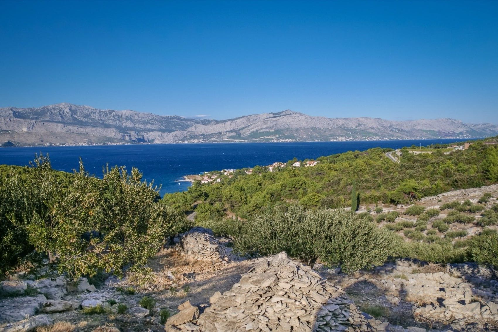
Maslinovo uljes dušomotoka Brača
Ekstra djevičansko maslinovo ulje obitelji Šantić – brano i prerađeno na vrijeme, iz starih maslinika na sjevernoj strani Brača.
Mi smo obitelj Šantić
Pero, Dragana, Ružica i Jure. Naš OPG nalazi se u Postirima, na sjevernoj strani otoka Brača. Maslinici se protežu na nekoliko pozicija u dužini od otprilike 20 km, a na njima raste oko 1.200 starih stabala koja su sadili naši djedovi.
Najzastupljenija je domaća sorta Oblica. Tradiciju smo nastavili čuvati, a od 2011. godine maslinike održavamo na ekološki način, uz pomoć ovaca koje su stalno prisutne među stablima.
Bavimo se i uzgojem mandarina, naranči, smokava, kivija i višanja – a sve što sami proizvodimo možete probati u našoj kušaonici.
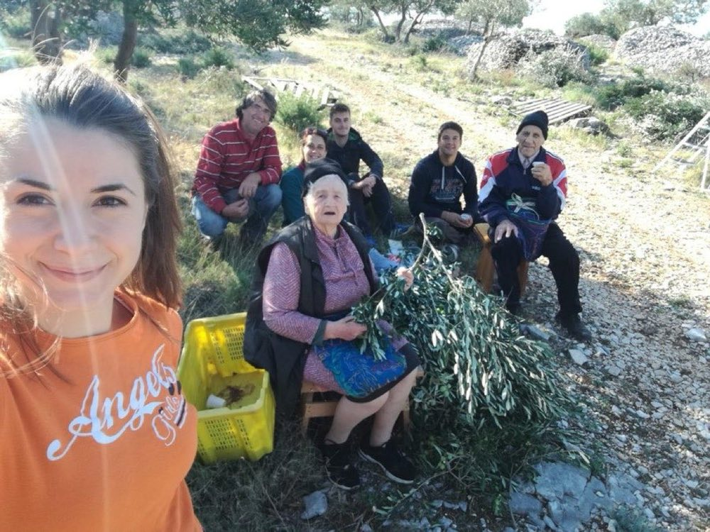
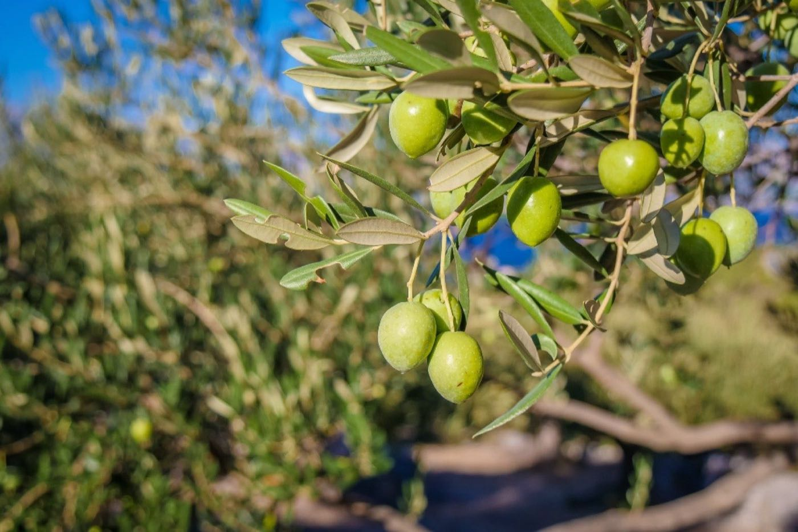
Manja kvantiteta, veća kvaliteta – u svakoj boci.
Pravodobnom berbom i preradom postižemo vrhunska kemijska i organoleptička svojstva našeg ulja – poseban izazov za nepca svakog kušača.
Zdrava hrana
Ekološki certificirana proizvodnja, potvrđena svake godine kroz Biotehnicon.
Ručna obrada
Obrada površina uz što manje tehnologije – tradicija prije svega.
Stočarstvo
Ovce brste površine umjesto košnje i prirodno gnoje maslinike.
Kvaliteta
Manja kvantiteta, veća kvaliteta – u svakoj boci.
Od 2011. bavimo se ekološkim uzgojem maslina, a 2014. dobili smo certifikat ovlaštenog kontrolnog tijela Biotehnicon, koji potvrđujemo svake godine. EKO certifikat imamo za ekstra djevičansko maslinovo ulje, ali i za naše površine i ovce.
Ekstra djevičansko, u boci koja ga čuva
Ulje pakiramo u ambalažu koja čuva njegovu kvalitetu – od male boce od 100 ml do poklon-kutije od 500 ml.
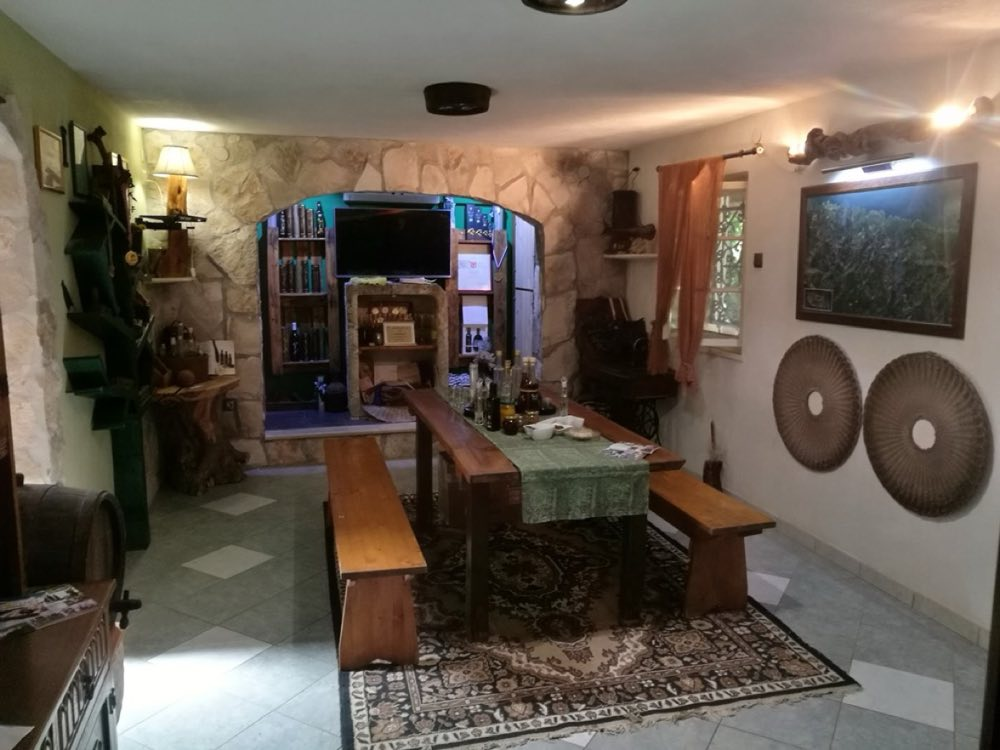
Probajte ulje onako kako je zamišljeno
Kušaonica se nalazi 50 metara od glavnog raskršća na ulazu u Postira. U njoj možete vidjeti i isprobati naše ekološko ekstra djevičansko maslinovo ulje, kao i sve što sami proizvodimo – likere, marmelade i sirupe.
Rezervirajte degustaciju →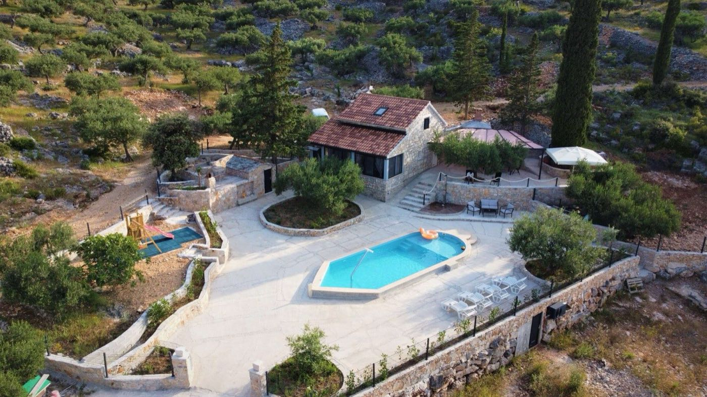
Villa Broč, u srcu maslinika
Mirno utočište u Postirima, blizu naših maslinika i kušaonice. Terasa, vrt i vanjski prostor za odmor – baza za istraživanje sjeverne obale Brača, uz plaže, ribolov i biciklističke staze u blizini.
Upit za Villu Broč →Kamen, sol, stara stabla
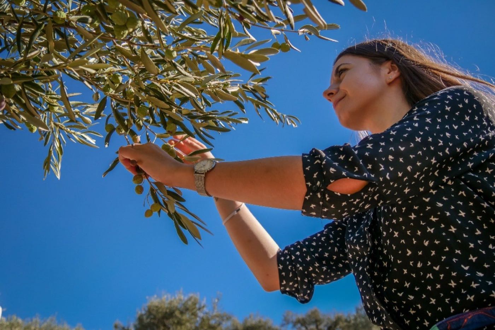
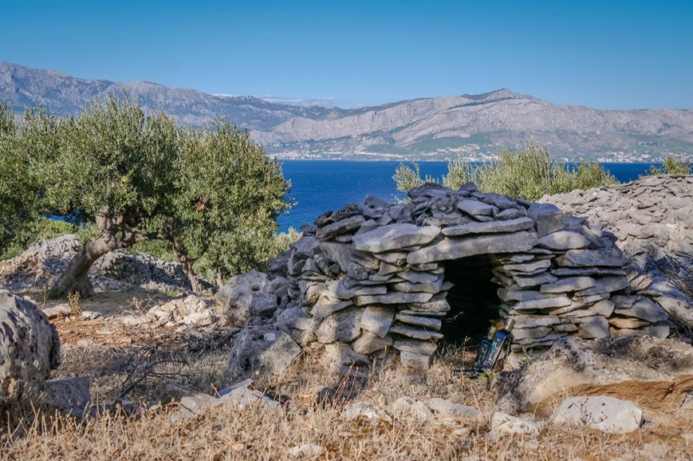
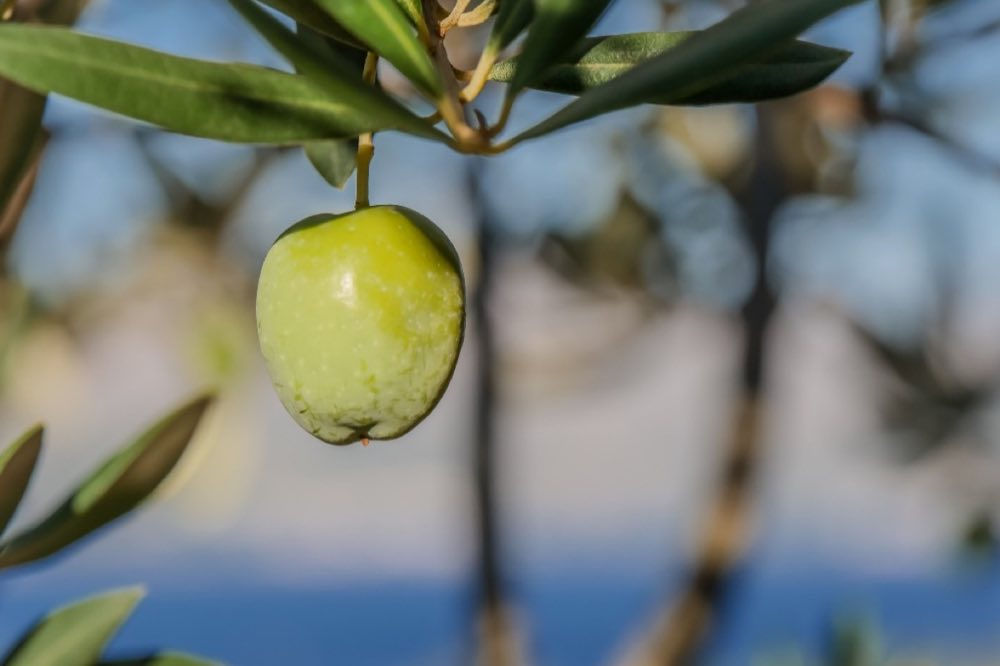
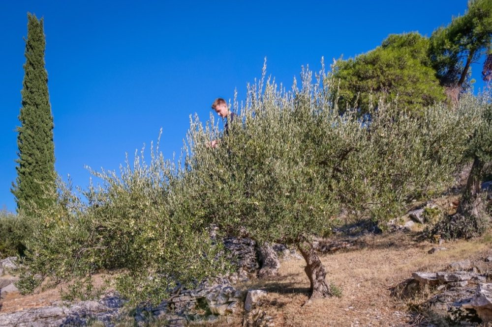
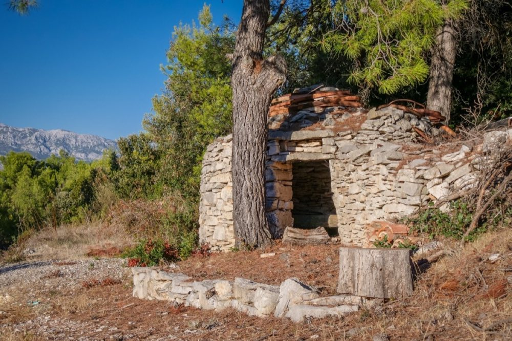
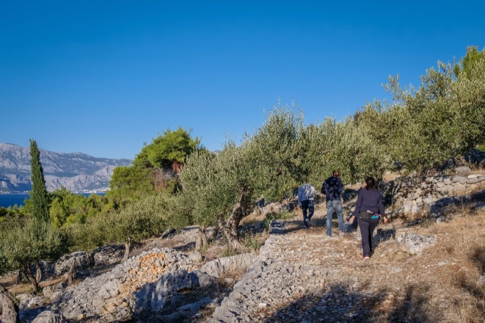
Što nas najčešće pitate
Kako mogu kupiti vaše ulje?
U našoj kušaonici u Postirima ili narudžbom – javite nam se e-mailom ili telefonom za narudžbu i dostavu.
Je li ulje ekološki certificirano?
Da. Od 2011. bavimo se ekološkim uzgojem maslina, a 2014. dobili smo certifikat ovlaštenog kontrolnog tijela Biotehnicon (HR-EKO-04), koji potvrđujemo svake godine.
Od koje je sorte maslina vaše ulje?
Najzastupljenija sorta u našim maslinicima je domaća Oblica. Ulje se dobiva izravno iz ploda masline isključivo mehaničkim postupcima.
Gdje se nalazi kušaonica?
Kušaonica je 50 metara od glavnog raskršća na ulazu u Postira, na sjevernoj strani otoka Brača.
Treba li se najaviti za degustaciju?
Da, javite nam se unaprijed telefonom ili e-mailom pa vas dočekamo u kušaonici.
Javite nam se
Za degustacije, narudžbe ulja ili upite o smještaju u Villi Broč – rado ćemo odgovoriti.
- Telefon+385 97 649 9402
- E-mailpero.broc@gmail.com
- AdresaGlavica 33, 21410 Postira, Hrvatska
Otvori u Google kartama →